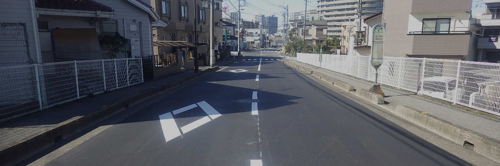
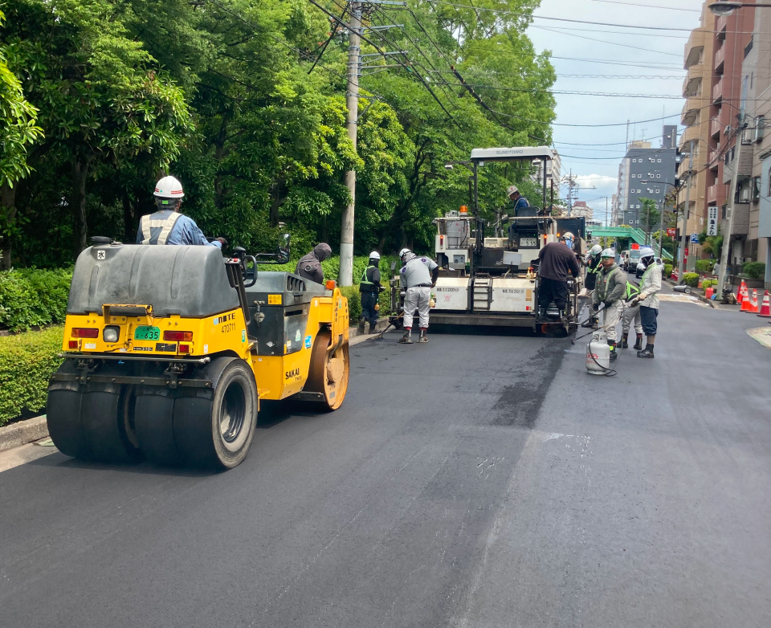

-



ABOUT
私たちについて
地域とともに歩み、
暮らしを支える
インフラを守る。
野村建工株式会社は、埼玉県川口市を拠点に1971年創業以来、
地域のインフラ整備に携わってまいりました。
道路や上下水道など、人々の暮らしに欠かせない社会基盤を支えることが私たちの使命です。
公共工事を中心に培ってきた豊富な経験と確かな技術力を活かし、
これからも地域の皆さまが安心して暮らせるまちづくりに貢献してまいります。
